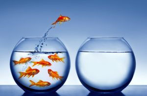

This week we have been asked to discuss the values that come to mind when we think back to the happiest, proudest, most satisfying moments of our lives.
From the long list provided, I narrowed it down to two: Freedom and Independence.
Freedom has been a big part of my personal happiness. I love to travel. What makes traveling so satisfying? Usually, it involves freedom to explore, make your own itinerary, and do what you like. For the past few months, I have taken a break from work to focus on studying web development with online courses, and now with DBC. I have worked hard every day, and have by no means been slacking off - yet the freedom to do it on my own terms has given me a feeling of contentment I haven't felt in a long time! It is something I will surely miss when I return to the "real world." However, it has made me realize that one of my goals for the future should be to find a job where I can work remotely, or even one day work for myself.
Independence is another important value for me. I feel like it also ties into Freedom as discussed above. In a way, independence is a requisite of freedom. I have always enjoyed being self-sufficient, and it feels good to not have to depend on anybody else. As a woman, this is doubly important to me.
I absolutely try to live up to these values every day.
The last time someone asked me for advice, it was about relationships. The topic surely relates to the values I've discussed, freedom and independence. If I remember correctly, the outcome of the discussion was that the relationship in question should be ended to achieve those two values!
I will remember these values whenever I need an emotional boost. If I am feeling down for whatever reason at DBC in the coming weeks, I will utilize my freedom and independence and go for long walks during my breaks. This always helps me to clear my head and feel better. I will also keep my goals in mind, which is a great motivator.
Independence is not always the way to go, though. When times are rough, it is incredibly helpful to reach out to others for support and someone to talk to. You don't have to go through it on your own!